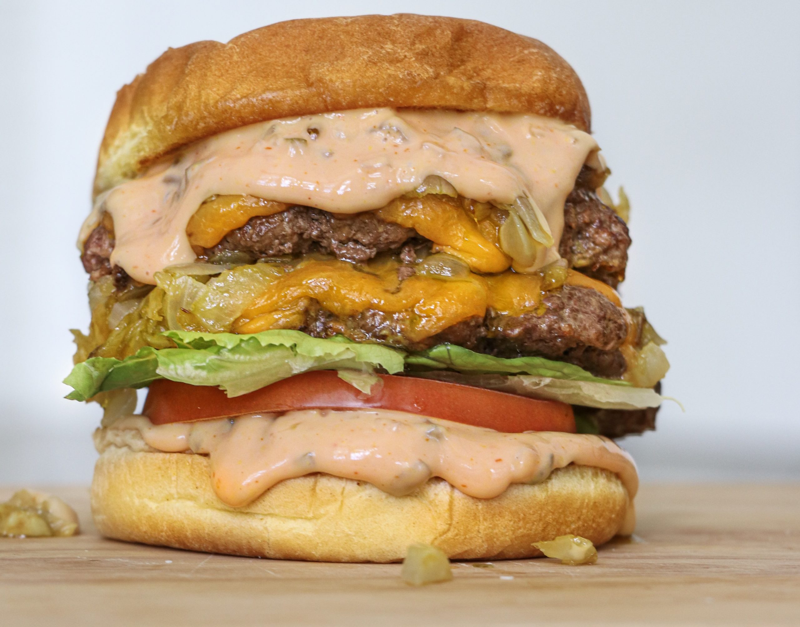

In-N-Out Burger

Description:
Make your own version of the In-N-Out burger with these simple ingredients and steps!
Each bite will send your taste buds into overdrive.
Ingredients:
- 2 Angus burger patties
- 1 large white onion, diced
- 1 large tomoato, 1-2 slices
- Iceberg lettuce
- 2 slices of cheddar cheese
- Hamburger bun
- 4 dill pickle chips
- Yellow mustard
Sauce:
- 1 Tbsp of ketchup
- 2 tsp of sweet pickle relish
- 1/2 tsp of sugar
- 1/2 tsp of distilled white vinegar
- 2 Tbsp plus 1 tsp of mayonnaise
- 1 tsp yellow mustard
Directions:
- Mix together all ingredients listed above for sauce.
- Dice your white onion and cook in a large saucepan on medium heat for about 45 minutes.
Stir occasionally. Be patient, caramelized onions take some time but keep the heat low/medium to prevent burning.
Once they're done, set them aide.
- Add some butter to both of the hamburger buns and toast them. Set aside.
- Grill (or pan fry) your burger patties. To make them look like in-n-out, make your patties very thin. While they are
cooking on one side, squeeze some yellow mustard on the uncooked side before flipping. Once you've flipped, add your
cheese on top of cooked side and allow them to finish cooking.
- Add some onions to the top of both of the patties and place one on top of the other.
- To build your burger, start with your bottom bun, add the secret sauce, pickles, tomato,
lettuce, patties, sauce, then top bun.